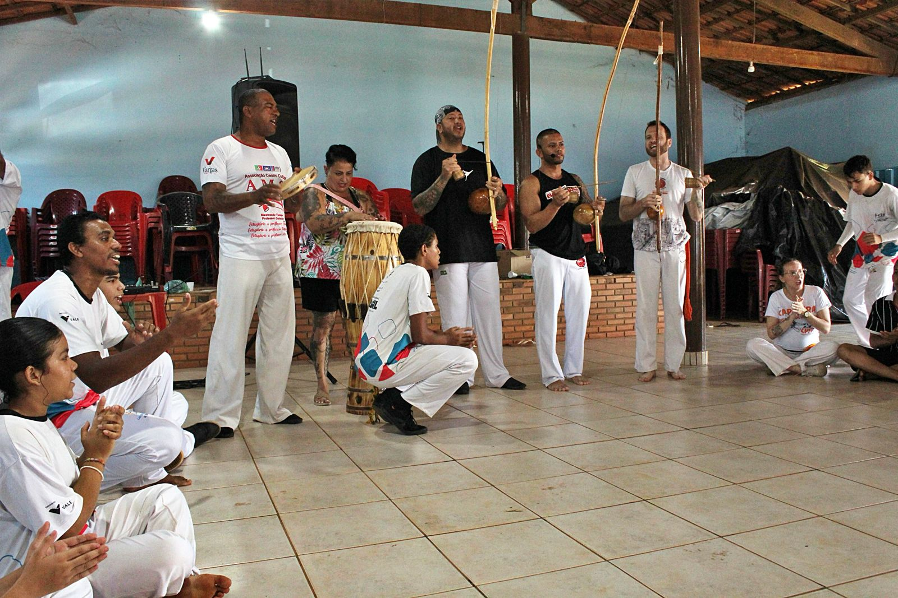
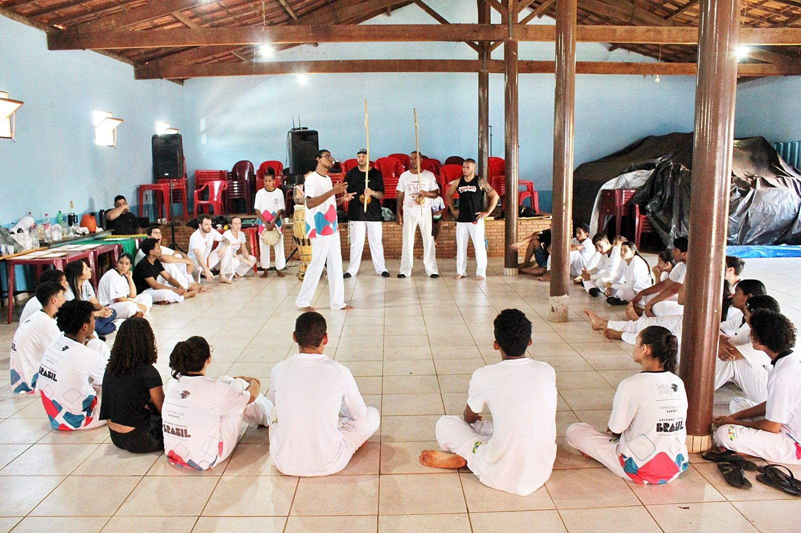
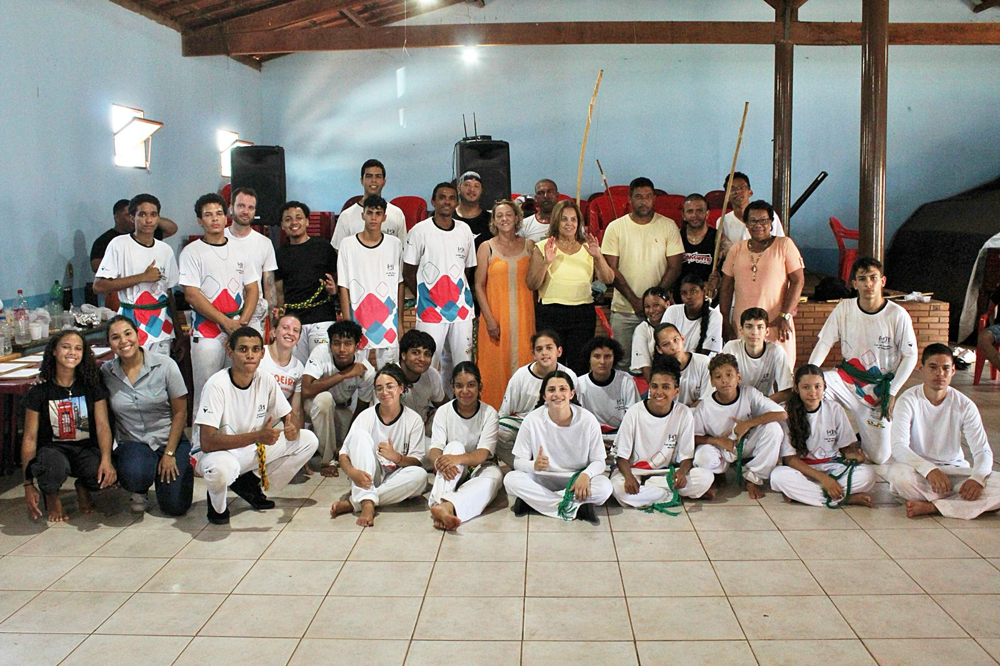

Momentos
Galeria de Fotos

Roda de Capoeira

Treino

Evento

Festival
Mestre Chitão
A música que guia, a tradição que ensina,
a fé que nos faz seguir.
O Grupo de Capoeira Salto de Fé, fundado pelo Mestre Chitão, é uma referência de tradição, arte e cultura afro-brasileira. Com raízes profundas na capoeira Angola e Regional, o grupo carrega a missão de preservar e difundir os ensinamentos dos grandes mestres.
Mais do que uma arte marcial, a capoeira é para nós um caminho de vida — que ensina disciplina, respeito, ginga e fé. A cada roda, reafirmamos nosso compromisso com a cultura, a história e a comunidade.
O Grupo de Capoeira Salto de Fé nasceu do sonho de um mestre que acreditava que a capoeira poderia transformar vidas. Fundado com poucos alunos e muita determinação, o grupo cresceu ao longo dos anos tornando-se referência na região.
A escolha do nome "Salto de Fé" reflete a filosofia do grupo: é preciso ter coragem para dar o salto, e fé para acreditar que se chegará ao outro lado. Essa máxima guia cada treino, cada roda e cada conquista.
Ao longo de sua trajetória, o grupo participou de festivais nacionais e internacionais, difundindo a capoeira como patrimônio imaterial da humanidade, reconhecida pela UNESCO em 2014.
Criação do Grupo Salto de Fé por Mestre Chitão
Abertura dos primeiros núcleos em cidades vizinhas
Participação em festivais nacionais e internacionais
150+ alunos formados, tradição viva em cada roda
Mestre Chitão é um dos maiores nomes da capoeira na sua região. Iniciou sua jornada na capoeira ainda criança, aprendendo com mestres que carregavam a sabedoria dos grandes patriarcas da arte.
Com décadas de dedicação, Mestre Chitão desenvolveu um estilo único que une a malícia da Angola à velocidade da Regional, sempre com a musicalidade como alma do jogo. Berimbau, atabaque e pandeiro são seus aliados na construção de rodas inesquecíveis.
Além de capoeirista, é educador, músico e guardião de uma tradição que ele transmite com amor e rigor a cada um de seus alunos. Sua vida é prova viva de que a capoeira é um caminho de transformação.
"A capoeira não se aprende só com o corpo. Aprende-se com a alma, com o coração e com a fé." — Mestre Chitão
| # | TÍTULO | ARTISTA / GRUPO | |||
|---|---|---|---|---|---|



Praça Central, Felixlândia – MG
16h00 às 20h00
RodaSede do Grupo
9h00 às 13h00
WorkshopGinásio Municipal
Todo o dia
FestivalQuer conhecer o grupo, começar a treinar ou convidar o Salto de Fé para um evento? Entre em contato conosco!